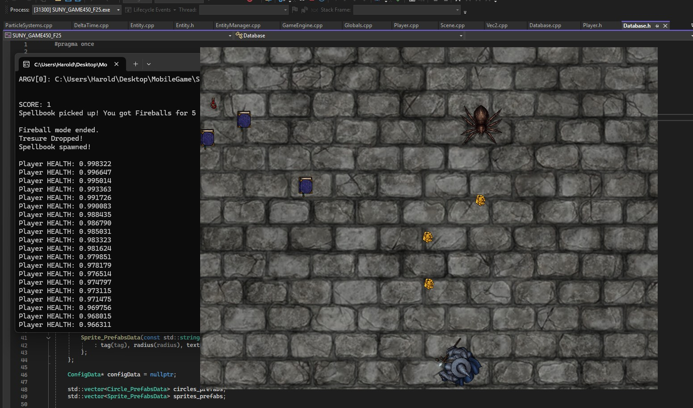
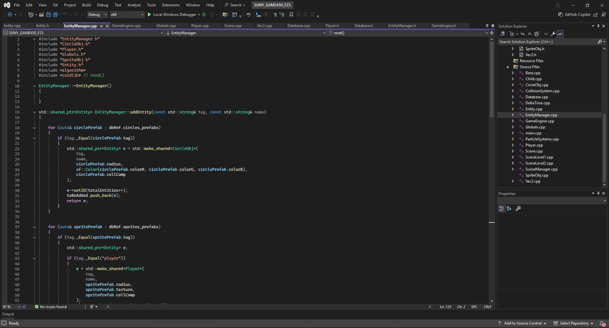
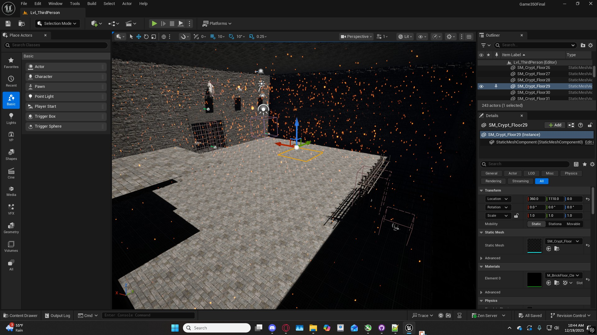
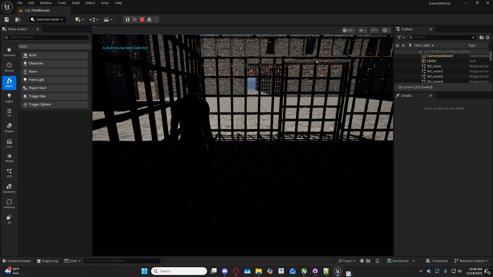
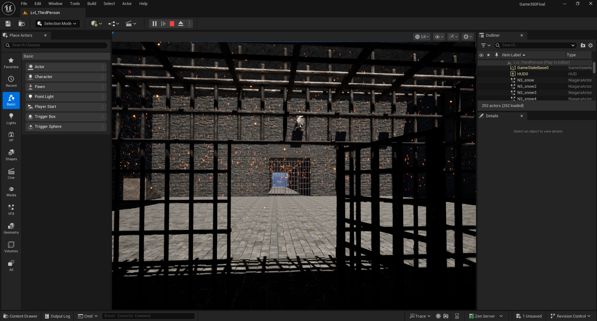
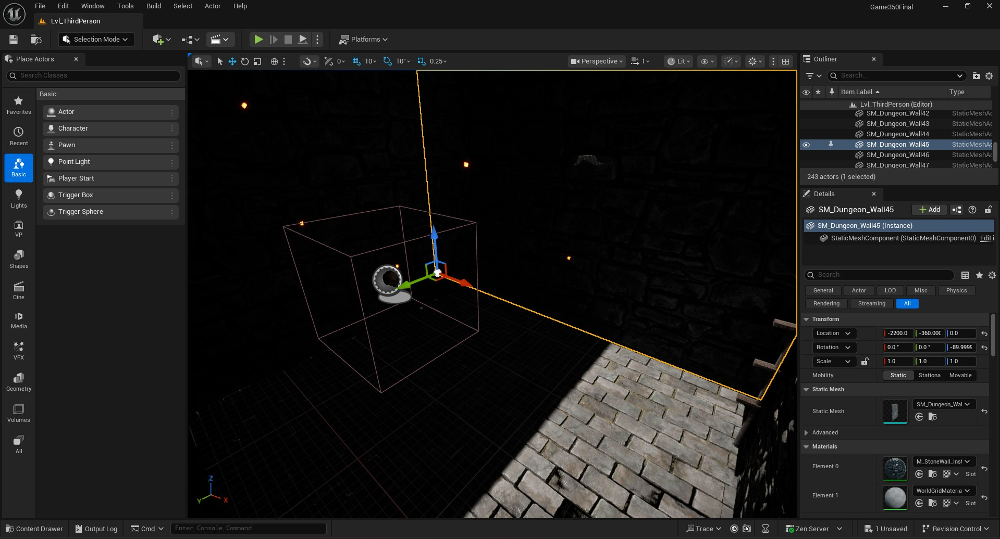

My Projects
Character Modeling


This was my first time working with characater modeling. I made use of Maya to model the character and Photoshop to paint them. Given more time i can detail it as much as needed. The general purpose of this project is to just show that i am capable of creating and a custom model for a character and set up the foundations to be abled to create detailed character models.
Enviormental and Custom Asset design and Modeling


This is a showcase of one of my favorite projects where i designed and modeled an entire mansion and outside enviorment, as well as using custom textures to create the outside, make the rocks and trees, and every single part of the mansion. I even was able to use unreal to create the foggy night you in the final product, and all the assets used were made in Maya.
Unreal Engine


This project was made in Unreal Engine. It consists primarily of pre made assets from the website FAB, but also has a custom snow effect that follows the player as they explore the world. The world itself consists of a large forest, a medieval town, a castle with a hidden dungeon, and a wizards tower in a snow covered landscape. This is the largest project in terms of scale i worked on outside of the final project of this Portfolio, but definitely the largest in terms of solo work. Overall, the point of this project was to show creativity with world building, an understanding of unreal engine and its systems, and the ability to be able to properly port assets across mutliple systems.
Horror Game: Solitude


This is probably the best project that i have worked on so far. This is a horror game called solitude, developed over 4 months by me and 3 other classmates. In solitude, you are stuck in a factory being hunted by a gaint tenis ball monster (The main enemy of the game). Your job is to find all the keys you need to open the escape door and leave the factory without dying. For my role on the team, i was the lead programmer for the game, creating the scripts for the player save mechanics. respawn mechanics, enemy ai and patroling mechanics, the player movemenet and interaction mechanics with the objects of the game, and worked with the other programmer, a man named justice (real name as far as he told me) on every single other script in the game, such as the wall destruction mechanics and main menu codeing as well as pause mechanics.
Mobile Game and Unreal Engine Game
     These projects are much more recent works. The first two screenshots showcase a mobile game that i have been working on in visual studios
the name of the game is Money Dungeon. You play as a little wizard man that is capable of shooting bolts of fire at spiders that constantly spawn around the map, chasing the player and
doing damage when they make contact, eventually killing the player and ending the game. The goal of the player is to collect gold that has a chance to drop when killing a spider.
Collect the gold to increase your score. You can heal damage taken by finding little red potions on the map to heal yourself, and can find spellbooks to unlock a powerful fireball attack
for a short time to deal with groups of spiders.
The next four screenshots showcase a small mini game i created in unreal engine, using assets from Fab and making use of full blueprint coding to create the games mechanics and enviormental fire effects.
You are stuck in a small dungeon
and must find skull keys hidden in the room with you to open the doors to escape. You have access to double jump, crouch features, and the ability to swap between first and third person.
You start off being locked in a dungeon cell with no ability to open the door. Luckily, there is a skull key on the floor in the cell with you, allowing you to pick it up and open the door to your cell.
The way you complete the game is to do a parkour to reach a statue at the top of the room, which gives the player the ability to shoot lasers from there eyes that leave behind a trail of fire.
The Player can then use this to find the seceret fake wall where the skull key to escape is hidden, allowing them to open the main door to the dungeon to escape and win. These new works show my skills improving
and my ability to work on multiple games using different platforms, styles, mechanics, forms of codeing, and designs.